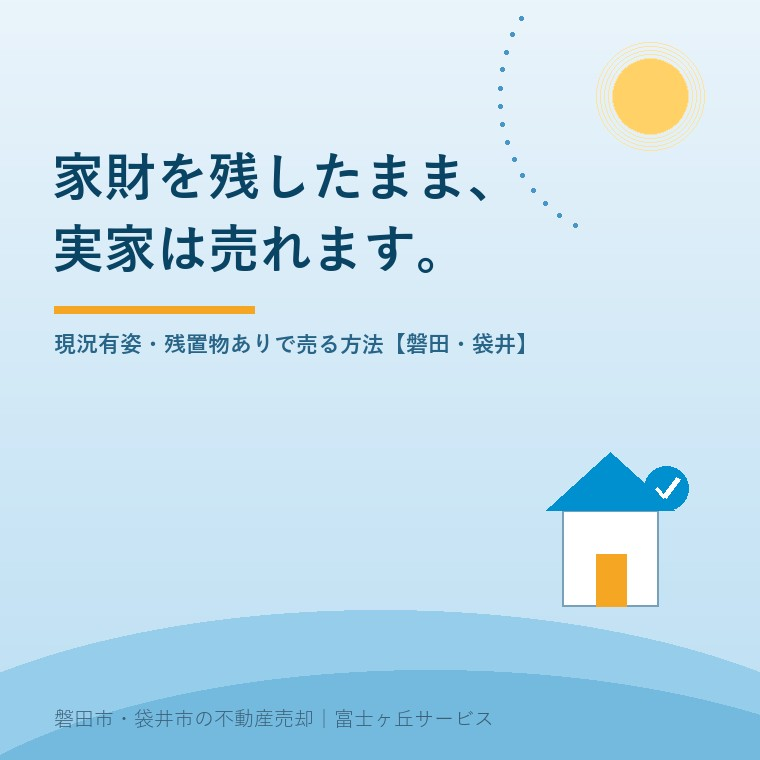

2026年8月7日｜カテゴリ：相場・地域・売却実務

この記事の要点
Q. 実家に父の家具も母の着物も仏壇も残ったままです。全部片付けないと、売りに出せないのでしょうか。
A. 片付けなくても売れます。「現況有姿・残置物あり」での売却は珍しくありません。ただし気をつけていただきたいのが、「現況有姿」は"そのままの状態で引き渡す"という約束であって、売主が責任を負わないという意味ではないということ。残置物の処理責任は法律上、建物の所有者にあります（環境省通知）。だから契約書に①誰が処分するか ②所有権を放棄するか ③費用は誰の負担かを必ず書き込む。そして付帯設備表には、動かないエアコンも「故障」と正直に書く。これだけで、引渡し後のトラブルはほとんど防げます。磐田市・袋井市・森町では、介護施設の運営から不動産事業を始めた富士ヶ丘サービスのような地域密着の会社に、家財が残ったままの状態から相談するという選択肢があります。
「まず片付けてから、ですよね」──ご相談の入口で、9割の方がそうおっしゃいます。そして片付けが終わらないまま、一年、二年と過ぎていく。遠方にお住まいで、月に一度しか帰れなければ、なおさらです。
でも、実務の順序は逆でもいいのです。売り方を先に決めてしまえば、片付ける範囲も、かける費用も決まります。全部捨ててから「実は買主が家具付きを希望していた」となれば、処分費が丸ごと無駄になる。今日は、家財を残したまま売るときの契約の作り方を、順を追ってお話しします。
| 方法 | 誰が処分するか | 価格への影響 | 向いているケース |
|---|---|---|---|
| ①引渡しまでに売主が処分 | 売主（費用も売主） | 価格は下がらない | 量が少ない／時間に余裕がある／高く売りたい |
| ②残置物ありで契約し、引渡しまでに売主費用で撤去する特約 | 売主（業者手配可） | ほぼ下がらない | 先に契約して金額を確定させたい |
| ③現況有姿・残置物ありのまま引渡し（所有権放棄） | 買主（費用も買主） | 処分費相当が価格から引かれる | 量が多い／遠方／早く手放したい／買取 |
ご家族の負担がいちばん軽いのは③です。実家の買取で書いたとおり、不動産会社が直接買い取る場合は、現況のまま引き取るのが通常なので、処分費の持ち出しがゼロで済みます。一方、一般のお客様に仲介で売る場合は①か②が中心。買主が住宅ローンを使うときは、引渡し時に空っぽであることを求められることが多いためです。
大切なのは、どの方法を選ぶかを「契約の前に」決めること。契約後に「やっぱり置いていきたい」と言い出すと、必ずこじれます。
売買契約書でよく見る「現況有姿にて引き渡す」。これを「何があっても文句なし」という意味だと思っている方が、売主にも買主にも本当に多いのですが、法律上はまったく違います。
| よくある誤解 | 実際の意味 |
|---|---|
| 現況有姿＝売主は一切責任を負わない | 現況有姿＝契約時点の状態のまま引き渡すという取り決め。修繕もリフォームもしないという意味であって、責任の話ではない |
| 免責特約を入れておけば安心 | 免責特約は原則有効。ただし知りながら告げなかった事実については責任を免れない（民法572条） |
| 引渡しが済めば終わり | 種類・品質の不適合は、買主が不適合を知った時から1年以内に通知すれば権利行使できる（民法566条） |
| 不具合が出たら直せばいい | 買主は追完（修補）だけでなく、代金減額・損害賠償・契約解除も選べる（民法562〜564条） |
とくに重いのが民法572条です。条文はこうです。
売主は、第五百六十二条第一項本文又は第五百六十五条に規定する場合における担保の責任を負わない旨の特約をしたときであっても、知りながら告げなかった事実及び自ら第三者のために設定し又は第三者に譲り渡した権利については、その責任を免れることができない。
つまり、「雨漏りしているのを知っていたが、免責だから黙っていた」は通用しない。契約書に何と書いてあってもです。ここが、契約不適合責任の記事でお伝えした「隠すより言うほうが安全」の根拠になります。
なお、売主が不動産会社（宅建業者）の場合は免責そのものができません。宅地建物取引業法40条により、引渡しから2年以上とする特約以外は、民法より買主に不利な特約を結べないと定められています。個人の売主だから免責できる、という点は覚えておいてください。
ここは意外と知られていない、しかし実務で決定的に効く論点です。環境省は平成30年6月22日付けの通知で、建築物の解体時等における残置物の取扱いについて考え方を示しています。要点は3つです。
「解体するときに、業者さんがまとめて持っていってくれるでしょう」というのは、実は法律の建付けとしては誤りなのです。解体費用の見積りで「残置物処分は別途」と書かれているのは、値上げのためではなく、こういう理由があります。
この事実は、売主にとって不利な話ばかりではありません。「処分は本来こちらの責任である」と理解したうえで、それを買主に引き受けてもらう対価として価格を調整する──これが③のやり方です。責任の所在を曖昧にしたまま「置いていっていいですよね？」と進めるから揉めるのであって、はっきりさせれば、単なる価格交渉の材料になります。
③を選ぶ場合、契約書と付属書類に次の3つを必ず入れます。当社が扱うときは、これがない契約書は作りません。
| 条項 | 書くこと | 入れないとどうなるか |
|---|---|---|
| ①所有権の放棄 | 「売主は、引渡し時に本物件内に存する動産等の所有権を放棄し、買主が任意に処分することに異議を述べない」 | 買主が処分した後で「あの箪笥は大事なものだった」と言われるリスク。逆に買主も、勝手に捨てられず動けない |
| ②処分費用の負担者 | 「残置物の処分に要する費用は買主の負担とする」（②方式なら「売主の負担で引渡しまでに撤去する」） | 引渡し直前に「聞いていない」と数十万円の請求合戦になる |
| ③残置物の範囲の特定 | 引渡し時の写真を撮り、契約書に添付。「別紙写真のとおり」と特定する。持ち出す物があるなら品目を列挙 | 契約時にあった物が引渡し時に無い（または増えている）と、数量の争いになる |
③の「写真で特定する」は、手間のわりに効果が絶大です。スマートフォンで各部屋を1枚ずつ、押入れと物置と庭も撮る。日付が入るので証拠になります。契約日と引渡日の2回撮っておけば、それだけで水掛け論はほぼ起きません。
そして、必ず持ち出すものだけは先にリストにしてください。仏壇、位牌、アルバム、通帳と権利証、貴金属、印鑑。この6つは、あとから「あの中にあったはず」となりやすい代表です。遺品整理の記事にも書きましたが、探す前に捨てられてしまうと取り返しがつきません。
残置物と並んでトラブルの温床になるのが付帯設備表です。物件状況等報告書（告知書）とセットで、売主が記入して買主に渡します。役割が違うので整理します。
| 書類 | 何を書くか | ねらい |
|---|---|---|
| 付帯設備表 | エアコン・給湯器・照明・網戸など設備ごとに「有／無／撤去」と、故障・不具合の有無 | 何が付いてくるか、それが動くかを確定させる |
| 物件状況等報告書（告知書） | 雨漏り・シロアリ・給排水の故障・境界・浸水履歴・近隣との申し合わせなど売主だけが知っている事実 | 知っている事実を伝え、民法572条の「告げなかった」を回避する |
コツは3つだけです。
当社の経験上、揉めやすい設備は決まっています。給湯器・エアコン・温水洗浄便座・ガスコンロ・食洗機・浴室乾燥機・インターホン・テレビアンテナ・網戸・物干し・照明器具。この11個は、内覧のときに一つずつ確認して、その場で表に書き込むようにしています。内覧で選ばれる家にも通じますが、正直に開示された家のほうが、結局は早く決まります。
この地域の実家をお預かりして、毎回のように出てくるものがあります。市の施設に持ち込めない品目が多いので、先に把握しておくと段取りが変わります。
磐田市・袋井市・森町の粗大ごみは中遠広域粗大ごみ処理施設（磐田市新貝59-1）が受け皿ですが、同施設では次のものは搬入できません。
これに加えて、地域特有の"手強いもの"がこちらです。
| もの | 注意点 |
|---|---|
| 仏壇・神棚・遺影 | 閉眼供養（魂抜き）を先に。菩提寺の予定次第で数週間かかる。契約前に相談を |
| 農機具・耕運機・肥料・農薬 | 市の施設に搬入できない代表格。JAや農機具店に相談。農地が付いている実家では必ず出る |
| 灯油のホームタンク | 中身を抜いてから。残油があると引取りを断られる |
| 浄化槽 | 使用をやめたら30日以内に「浄化槽使用廃止届出書」の提出が必要（浄化槽法）。磐田・袋井は市の担当課または西部健康福祉センターへ。売却時に確認されます |
| 井戸 | 埋め戻しが必要になることが多い。地下水利用の届出が残っていないかも確認 |
| 未登記の物置・カーポート・増築部分 | 「残置物」ではなく建物の話になる。売買の対象に含めるか、解体するかを契約書で明記 |
| 庭石・植木・灯篭 | 撤去に重機が要り、想像以上に高い。買主が「そのままでいい」と言うことも多いので必ず確認 |
富士ヶ丘サービスは磐田市見付に事務所を置き、介護施設の運営から不動産に入った会社です。ご相談の入口が「施設に入る」「亡くなった」であることが多いので、家財が残ったままの実家を見せていただくのが、むしろ日常です。片付いていない状態でお呼びいただいて構いません。というより、片付ける前に一度見せてください。捨てなくていいものまで捨ててしまう前に、売り方を決めたほうが、ご家族の時間もお金も残ります。
片付けは、ご家族にとって最もつらい作業です。物を捨てる作業ではなく、親の人生を一つずつ手にとって判断する作業だからです。だからこそ、「どこまで片付ければ売れるのか」の線を、最初に引いてしまってください。その線があれば、作業は驚くほど軽くなります。
実家じまい相談室では、家財が残ったままの状態で写真を送っていただければ、「これは残して大丈夫」「これは先に出しておきましょう」を仕分けしてお返ししています。手取りの試算とあわせて、お盆前にどうぞ。
ふじがおか実家カルテ｜片付ける前に、線を引きます
家財が残ったままの写真で結構です。
登記情報・公図・固定資産税通知書に加え、お部屋の写真から、残してよい物・先に出す物・処分費の目安を宅建士が仕分けし、想定価格とあわせて1冊にまとめてお渡しします。
本記事は2026年8月7日時点の公開情報に基づく一般的な解説です。契約条項の文例は考え方を示すものであり、実際の契約書は物件の状況と当事者の合意により異なります。ごみの分別・搬入可否や届出の提出先は変更されることがありますので、必ず磐田市・袋井市の最新の案内でご確認ください。法的な判断は弁護士・司法書士に、税務は税理士にご確認ください。個別のご相談は当社までどうぞ。

この記事を書いた人：大石浩之（宅地建物取引士）
磐田市・袋井市・森町で「介護×相続×空き家」に特化した不動産売却支援を行う富士ヶ丘サービスの代表取締役・宅地建物取引士。介護施設の運営から不動産事業を始めた経験をもとに、売主とご家族が困らない売却を一件ずつお手伝いしています。プロフィール
磐田市・袋井市・森町の実家じまい・相続空き家相談
固定資産税通知書だけでも相談できます
住所があいまいでも、通知書や写真から名義・道路・農地・残置物の確認順を整理します。カルテ申込またはLINEで状況を送ってください。
富士ヶ丘サービス株式会社／静岡県磐田市見付5789番地1／TEL:0538-31-3308／静岡県知事 (2) 第14083号／代表取締役・宅地建物取引士 大石 浩之